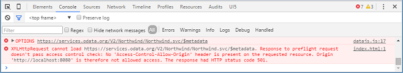

If you use a remote URL in your code, for example a remote OData service, such as the publicly available Northwind OData service, the browser may refuse to connect to a remote URL. Due to the same-origin policy, browsers deny AJAX requests to service endpoints in case the service endpoint has a different domain/subdomain, protocol, or port than the app.

Normally, the remote system would be configured to send the cross-origin resource sharing (CORS) headers to make the browser also allow direct access to remote URLs. However, if you, for example, use a Northwind OData service, you cannot modify the publicly available service. Then when you try to execute XHR requests (XMLHttpRequest) the browser prevents the call due to the same-origin policy.
To solve the issue, you have the following options:
SAP Web IDE: Configure a destination as described below (recommended)
Local Development: Configure a local proxy
Workaround: Disable the same-origin policy in the browser for local testing (not recommended, only for testing)
Set the CORS-relevant response headers on the remote system (if possible)
SAP Business Application Studio and SAP Business Technology Platform offer destinations that allow you to easily connect to remote
systems. The destination to the Northwind OData service is an internet proxy made available inside the app. Any request that is sent
to this location is forwarded to https://services.odata.org automatically.
The destination is configured inside the SAP BTP cockpit. For more information, see Create a Destination in the SAP BTP cockpit.
In the manifest.json descriptor file of your app, you can now change the data source to use the remote
destination, for example:
{
"_version": "1.59.0",
"sap.app": {
...
"dataSources": {
"invoiceRemote": {
"uri": "/V2/Northwind/Northwind.svc/",
"type": "OData",
"settings": {
"odataVersion": "2.0"
}
}
}
},
"sap.ui": {
...
},
"sap.ui5": {
...
}
}After this change, you can run the app in SAP Business Application Studio without disabling the same-origin policy of your browser. The destination now manages the connection to the remote service.
Please note that any npm packages you install from third parties can not only modify your project but also execute arbitrary code on your system. Always act with the according care and follow best practices.
A proxy is simply a service end point on the same domain of your app to overcome the restrictions. It receives requests from the app, forwards them to another server, and finally returns the corresponding response from the remote service.
Follow the steps below to configure a proxy of your choice in your project. Make
sure to replace the
myProxy placeholder with your actual proxy name.
Prerequisites: NodeJS is installed on your machine.
{
"name": "Sample-Package",
"version": "1.0.0",
"description": "Sample package.json",
"scripts": {
"proxy": "node proxy.js"
},
"devDependencies": {
"myProxy": "^x.y.z"
},
"dependencies": {
}
}Add the devDependency called "myProxy": "^x.y.z" to your existing package.json.
Run node install to install the npm module. Add the proxy script to the scripts
section in the package.json so that you can run a script via npm run <script_name>.
var cors_proxy = require('myProxy');
// Listen on a specific IP Address
var host = 'localhost';
// Listen on a specific port, adjust if necessary
var port = 8081;
cors_proxy.createServer({
// Set parameters for:
// allowed origins,
// required headers ['origin', 'x-requested-with'],
// headers to be removed ['cookie', 'cookie2']
}).listen(port, host, function() {
console.log('Running myProxy on ' + host + ':' + port);
});Create a new file proxy.js, and copy the above script into your project directory. This is the pre-configured
proxy server we are going to use to prevent the occurrence of same-origin policy error. We can start it by
running the command node proxy.js or npm run proxy. It runs a local proxy on
port in the console.
{
"sap.app": {
...
"dataSources": {
"northwind": {
"uri": "http://localhost:8081/https://services.odata.org/V2/Northwind/Northwind.svc/",
"type": "OData",
"settings": {
"odataVersion": "2.0"
}
}
}
}
}To use a service in the local ui5 application we have to change the uri in the
manifest file.
The uri must start with
http://localhost:<port>.
By default, you can't run the request in your browser with the proxy.js script. It throws the following
exception: exception Missing required request header. Must specify one of: origin,x-requested-with. If you want
to test the service in your browser, you can temporarily comment out the parameter requiring the headers ['origin',
'x-requested-with'] from your proxy.js.
In Google Chrome, you can easily disable the same-origin policy of Chrome by running Chrome with the following command:
[your-path-to-chrome-installation-dir]\chrome.exe --disable-web-security --user-data-dir. Make sure that all
instances of Chrome are closed before you run the command. This allows all web sites to break out of the same-origin policy and
connect to the remote service directly.
This approach is not recommended for productive apps. Running Chrome this way for surfing on the internet poses a security risk. However, it allows you to avoid the need of setting up a proxy at development time or for testing purposes.